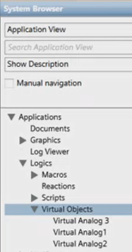
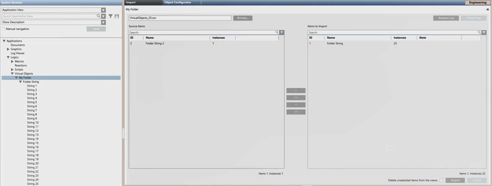

Virtual Objects Import
The import of virtual objects consists in acquiring the configuration from CSV file. The data in this file represents the virtual objects and corresponding folders as they will be created under the Virtual Objects root or any subfolder under it in Application View of System Browser.

Virtual Objects Import Workspace
When you are in Engineering mode and select Virtual Objects or any subfolder under it in Application View of System Browser, the Import tab lets you import the virtual objects included in the CSV configuration file. For instructions, see Configuring Virtual Objects.

Import Virtual Objects from CSV Configuration File
Clicking the Browse button you can select a CSV configuration file.
- After you select the file to import, clicking Analysis Log you open a log about pre-import operations. The configuration file is parsed to check for errors or unsupported objects before import. A message box informs you of any warnings/errors and suggests viewing the log.
Then you can:
- View the virtual objects folders available in the selected configuration file (Source Items).
- Search for specific virtual objects folder to import, and move those folders from Source Items to Items to Import to have a preview of the virtual objects folders that will be imported.
- Specify whether, during the import, any virtual objects folders that are not present in the file to import must be removed from the node selected for the import: select Delete unselected items from the views. You can use this option, for example, when there are some pre-existing virtual objects that you do not want to retain.
Clicking the Import button you start the import process.
- A Cancel button is available to cancel the import operation.
- During the import, the State column indicates the status of the import for each selected item (such as,
in progress,completed, orfailed).
Once the file processing is completed successfully, the imported items are available in System Browser. Also, the Import dialog box displays and you can view a summary of the import outcome (such as, Items result, Instances result, and Import completed in [min/sec]). Clicking Import Log you can also save the details of the import operation to a TXT file.
Re-import of Virtual Objects
The re-import either partially or completely re-imports existing data in order to update it (matching the configuration file data). This may imply adding, modifying, or deleting data stored in the database. In particular, re-importing the virtual object configuration contained in a CSV configuration file result in:
- Creation of new virtual object folders, including their virtual objects
- Virtual objects folders already existing being updated as follows:
- Creation of new virtual objects.
- Update of existing virtual objects.
NOTE: If any virtual object has the Override Protection check box set in the Main expander of the Object Configurator, during the re-import this option will prevent the override of the Description text. For more details, see Re-importing Data and Override Protection in Field Data Import. - Deletion of existing virtual objects that are not listed in the CSV file.
- Deletion of existing virtual objects folders that were not selected for the re-import (only if the Delete unselected items from the views check box is selected).
During a re-import, the validation level is checked on the selected node, which must have a validation profile higher or equal to the maximum validation profile of any child virtual object.
Deletion of Virtual Objects

Deletion of nodes that no longer exist is carried out at the beginning of the import operation. In this way, if the deletion fails for any reason the import operation is stopped to avoid system overload.
Deleting virtual objects manually
You cannot delete folders and their virtual objects in one shot. You must first delete the virtual objects one by one manually and then the corresponding folder.
Alternatively, you can do an import using a configuration file that contains one virtual object only. In this way, any pre-existing configuration is overwritten and you only must delete manually one virtual object and its folder.